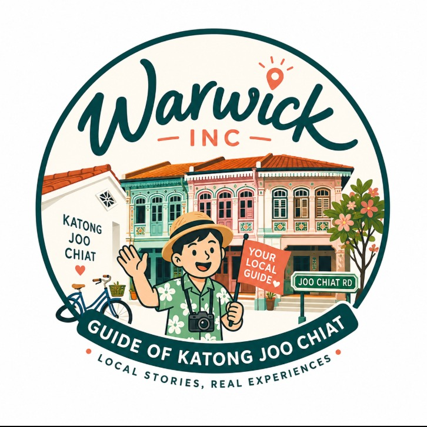

📍

WYour local guide to Singapore's Peranakan heart — food, culture & real stories.
We'll suggest the best spots to start with.
The map uses free OpenStreetMap tiles and needs an internet connection
to download them the first time.
Check your connection and reload the page.
Everything else — the list, check-ins, points and badges — works offline too.
SITE_URL near the top of the code. The QR codes below encode that address.